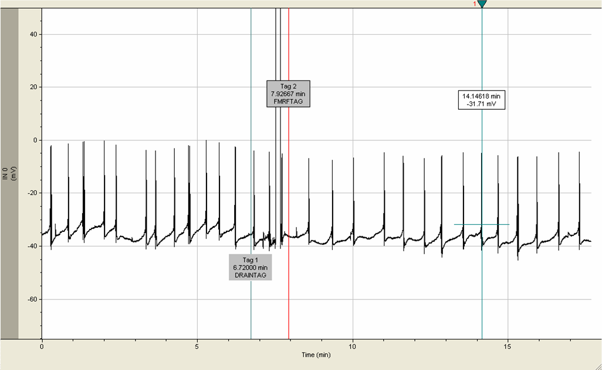
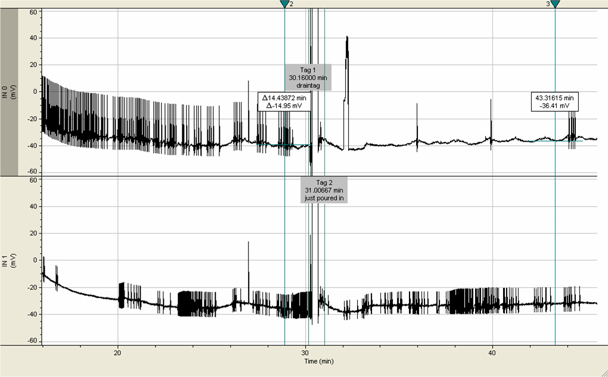
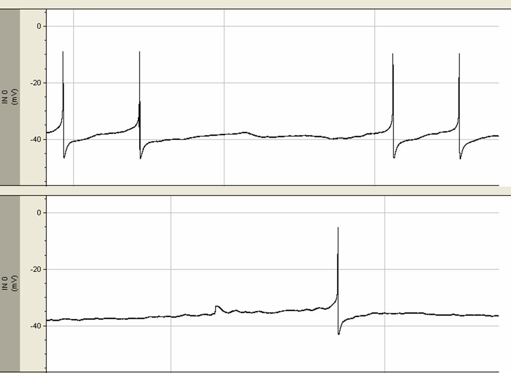
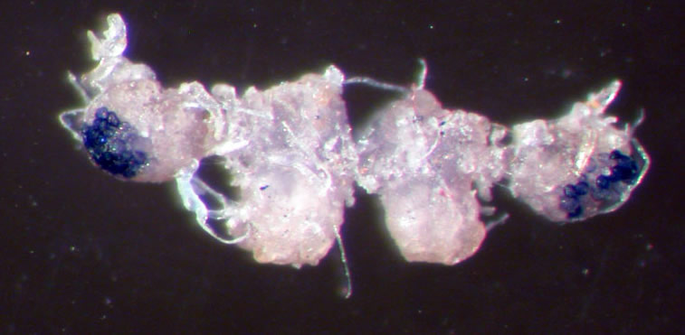
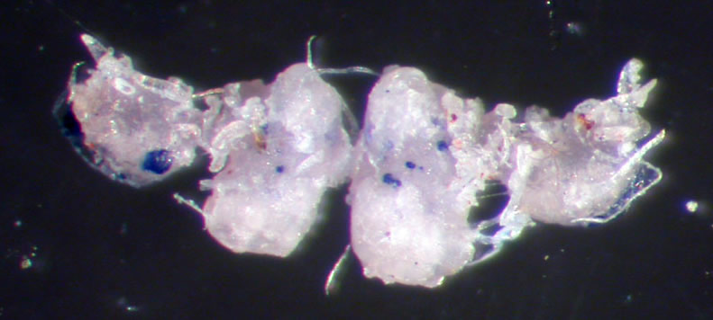
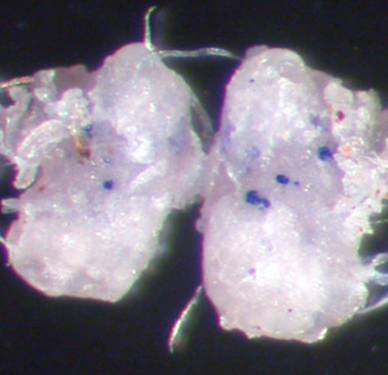
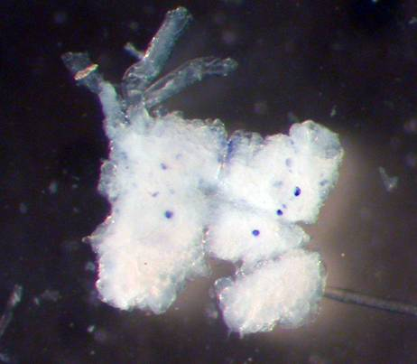

| UPDATE: This work was presented as a poster at the University of Washington Undergraduate Research Symposium 2007 on 18 May 2007. Abstract found in the proceedings. |
[Introduction/Background] - [Materials/Methods] - [Results/Discussion] - [Conclusions] - [References] |
Introduction/Background Like other neurotransmitters, neuropeptides are messenger molecules found in neural tissue, formed by the linking of α-amino acids. They are different from most other neurotransmitters in that they have more diverse effects than simple depolarization or hyperpolarization of the post-synaptic cell. Examples of diverse action include effects on gene expression, local blood flow, synaptogenesis, and glial cell morphology (Neuropeptide, Wikipedia). There are two main methods of investigation of these neuropeptides in whole Tritonia brains. The distribution of specific peptides in the tissue can be investigated using immunochemistry, while their function can be investigated using electrophysiology. The first objective of my study focused on using the two techniques to describe the presence and function of the neuropeptide FMRFamide in the Tritonia central nervous system. FMRFamide is a neuropeptide originally isolated from the hard clam, where it has been shown to be cardioactive. It has been found abundant in nearly all mollusks tested so far. Very little is known about neuropeptides in general, and FMRFamide is no exception—its functions have not been fully described. First, I investigated the expression of FMRFamide as detected by the FMRFamide antibody. Second, I explored the effect of FMRFamide on the activity of known neurons using electrophysiology. This investigation was made possible by the availability of both FMRFamide peptide and FMRFamide antibodies. But what if the peptide of interest is novel? One such peptide is Clionin, a neuropeptide of unknown function sequenced through subtractive hybridization from Clioni - a pteropod mollusk. The second objective of my study became to investigate the expression of the gene Clionin in the Tritonia central nervous system. Since the gene sequence is known, the more efficient way to stain for the peptide is through the technique of in situ hybridization. This method allows the visualization of the “distribution and density of particular sequences of nucleic acids (usually mRNA) in tissue” (Zupanc). So little is known about neuropeptides that every addition to the knowledge base is valuable. Neuropeptide expression can also be a reliable way to characterize and re-identify cells (Small et al., 1992). Further, in situ hybridization has not been done on Tritonia at Friday Harbor Labs, and opens a new venue of research that may yield insights into the magnetoreception pathway. |
Materials/Methods First Objective: FMRFamide in the Tritonia CNS. The immunochemistry was performed in accordance to the standard lab protocol available in lab, which is based on “Immunochemistry Wholemounts” protocol by Win Watson, made available to me by James Murray. Whole brains were extracted out of live animals and pinned out in sylgard-bottomed dishes. A short digestion in protease was followed by overnight fixing, washing in phosphate buffer, PTA (0.1% Triton X-100), and blocking with non-immune (goat) serum. Then the primary antibody (Rabbit anti-FMRFamide) was introduced in varying dilutions, to ensure that at least one wholemount was stained successfully. After 48 hrs incubation at 4 C, the tissues were rinsed in PTA and the secondary antibody was added (Alexa Fluor 647 goat anti-rabbit) for 48 more hours of incubation at 4 C. The wholemounts were then washed in PTA and PBS, cleared in methyl salicylate, and mounted with DPX. Imaging was done on BioRad MRC-600 scanning laser confocal microscope. Electrophysiological recordings were made from isolated brain preparations pinned out in a cooled sylgard-bottomed dish in drip-through FSW. Glass micropipettes filled with 0.200 mM KCl were used in standard intracellular recording technique. Activity was recorded using an Axon Instruments Multiclamp 700B Ampifier and Clampex 9.2 software. Random cells were selected, in hope of finding a few that would respond dramatically to FMRFamide. The procedure was as follows: record from cell for 15-20 minutes to allow time to heal and establish baseline firing rate and action potential shape. The FSW that was in the dish was then drained using a plastic pipette, and a 1:10^6 dilution of FMRFamide was poured into the dish, to replace the liquid drained. The water flow was not stopped. 10-15 more minutes were allowed for recording of FMRFamide-influenced activity, at which point all the water was again drained out and replaced with FSW, as a control. After recordings were made, they were examined (qualitatively) for two things: changes in frequency of action potentials as a result of adding either FMRFamide or FSW, and changes in the shapes of individual action potentials and visible postsynaptic potentials under the influence of FMRFamide. Second Objective: Clionin mRNA expression in the Tritonia CNS. In situ hybridization depends on different cells expressing different genes. Although every cell of an organism contains its entire genome, each cell transcribes only a fraction of all the genes available to it. If the sequence of a gene of interest is known, it is possible to make a complementary (anti-sense) strand to its mRNA. Basically, this is a cDNA clone of the gene. This probe can then be labeled with something to allow recognition of its presence inside of a cell. In my experiment, the probe was labeled with digoxigenin (DIG), which could then be identified with labeled antibodies. The tissue was prepared for the hybridization following methods described in Jezzini et al. 2005, and elucidated through personal communication with Andreas Heyland. The central nervous system was dissected out of the animal and given a protease bath to partially digest and loosen the containing sheath. After the treatment, it was fixed in paraformaldehyde/PBS, washed in PBS, and desheathed. A process of dehydration and rehydration in methanol followed, as well as washes in solutions of Tween-20 and Triton X-100, and about an hour in proteinase K treatment. The brain was then post-fixed, stopped, and washed again in PTW and TEA-HCl, to which acetic anhydride was added. The tissue was placed in hybridization buffer, and after 6 hours at 50 C, the probe was added in 1:500 dilution. After 12 hours incubation with the probe, the tissue was washed with solutions of gradually decreasing formamide content, then in PBT (a Triton X-100 solution) and blocking solution. The DIG-antibody was added in 1:1000 dilution for 12 hours. After several washes in PBT and the detection buffer, stock NBT/BICP detecting solution was added to the well (1:50 dilution). The well turned a cloudy yellow and had to be protected from light, at 4 C. After approximately 2 hours of development, the tissue was sufficiently stained but background had not yet developed. A post-fix in paraformaldehyde/methanol, as well as two washes in 1% methanol, cleared the tissue, and prepared it for storage in 100% ethanol. Imaging was done with a Nikon digital camera mounted on a bright field microscope. |
Results/Discussion Immunochemistry. The FMRFamide immunochemistry was a wholly satisfying project, and yielded agreeable results. FMRFamide expression in the cerebral, pleural, and pedal ganglia: And in the buccal ganglia, at 1:1000 primary dilution/1:200 secondary dilution: It is evident that the three wholemounts showed slightly different distributions of FMRFamide. At the same time, undeniable similarities exist. For example, the symmetrically placed cell in the cerebral ganglia, located by the connective bridge to the pedal ganglia, is brightly lit in all pictures. It is inconclusive which dilution worked the best. I personally prefer the image of the 1:500 primary / 1:200 secondary dilution, but that may be a superior image because of my increased skill in using the confocal microscope. Electrophysiology. My foray into electrophysiology yielded no conclusive results; conclusive results, however, were not expected. My goal was to see if FMRFamide would indeed affect in some way a Tritonia neuron. For anything more than such a result, a much more systematic and extensive study would be required (for an example of such a study in Aplysia, see Pieroni and Byrne, 1992). That said, I could find only inhibitory or no effect on the frequency of action potentials, and I could find no visible effect on depolarization form.   In all experiments, adding just FSW had no effect.  These methods appear severely limited when taken as a lone approach to the study of neuropeptides. I had a number of questions after my results were in. For example, even if we determine that FMRFamide inhibits the postsynaptic potentials of a given cell, there is still too much that is not known: the other cells in the pathway, where the FMRFamide was made, and how exactly it functions. The last point is particularly important, as neuropeptides have a variety of effects that are not limited to excitation or inhibition of target cell. This also has bearing on my experimental design: perhaps the effects of FMRFamide take longer than 10-15 minutes to detect, and cannot be washed away easily. In Situ Hybridization. After much trouble, wholemount in situ hybridization labeling was also achieved in Tritonia.   The labeling seems to be consistent across system. For example, below, the cerebral ganglia from two completely different populations of Tritonia express exactly the same Clionin pattern.   For comparison, this is the labeling of Clioni cerebral ganglia: In situ hybridization is a fickle process, and it took me a number of tries to figure out how to do it right. One thing that I found very important is proper desheathing. Unless the sheath is cleaned off the tissue completely, with particular attention to all connective spots, the brain will curl up when placed in hybridization buffer at 50 C. Once I figured that out, on the last try, my brains stayed perfectly flat throughout the process. |
Conclusions A good way to expand the FMRFamide investigation is to combine both of my objectives. The FMRF gene has been determined in Tritonia, and it is possible to make a probe for its mRNA. The Tritonia CNS can thus be labeled for FMRFamide mRNA. It would be interesting to compare the expressions of FMRFamide mRNA to FMRFamide as detected by the antibody. A number of researchers did that, as well as comparing the expression of FMRFamide as detected by various permutations of the probe sequence (Santama and Benjamin 2000, Shaw et al. 1996). Another promising area of research that stems out of my experience is using in situ hybridization to look at immediate-early gene expression in the Tritonia CNS. Immediate-early genes are transcribed as a first response, before any new proteins are synthesized, in response to novel ceullar stimuli. Assuming that Tritonia does not always have its magnetoreception pathway “on,” but enables it in response to select stimuli, it may be possible to stimulate the animal magnetically and then label its brain for an immediate-early gene. Ideally, the pathway that had been inactive will be expressed through immediate-early gene hybridization (Nemec et al., 2001, Nemec et al. 2005). This is definitely a promising research area in Tritonia. |
References Cain, S. Personal communication. Heyland, A. Personal communication. Jezzini, S. H.; Bodnarova, M.; Moroz, L. L., Two-color in situ hybridization in the CNS of Aplysia californica. Journal of Neuroscience Methods 2005, 149, (1), 15-25. Nemec, P.; Altmann, J.; Marhold, S.; Burda, H.; Oelschlager, H. H. A., Neuroanatomy of magnetoreception: The superior colliculus involved in magnetic orientation in a mammal. Science (Washington D C) 2001, 294, (5541), 366-368. Nemec, P.; Burda, H.; Oelschlager, H. H. A., Towards the neural basis of magnetoreception: a neuroanatomical approach. Naturwissenschaften 2005, 92, (4), 151-157. Neuropeptide. (2006, June 3). In Wikipedia, The Free Encyclopedia. Retrieved 11:24, June 8, 2006, from http://en.wikipedia.org/w/index.php?title=Neuropeptide&oldid=56670670. Murray, J. Personal communication. Pieroni, J. P.; Byrne, J. H., Differential Effects of Serotonin, FMRFamide, and Small Cardioactive Peptide on Multiple, Distributed Processes Modulating Sensorimotor Synaptic Transmission in Aplysia. The Journal of Neuroscience 1992, 12(7), 2633-2647. Santama, N.; Benjamin, P. R., Gene Expression and Function of FMRFamide-Related Neuropeptides in the Snail Lymnaea. Microscopy Research and Technique 2000, 49, 547-556. Shaw, C.; Maule, A. G.; Halton, D. W., Platyhelminth FMRFamide-Related Peptides. International Journal for Parasitology 1996, 26, (4), 335-345. Small, S. A.; Cohen, T. E.; Kandel, E. R.; Hawkins, R. D., Identified FMRFamide-immunoreactive Neuron LPLI 6 in the Left Pleural Ganglion of Aplysia Produces Presynaptic Inhibition of Siphon Sensory Neurons. The Journal of Neuroscience 1992, 12, (5), 1616-1627. Watson, W. Immunochemistry Wholemounts (with changes/additions by Jim Murray). Zupanc, G. K. H. Behavioral Neurobiology. New York: Oxford University Press, 2004. |
Acknowledgments Instructors: Dr. Shaun Cain, Dr. Jim Murray Research Assistant: Natika Bock Lecturer: Dennis Willows Other Apprentices: Allie Sherman, Amelia Bachleda, Donn Viviani, Ledia Gomes Abracado, Thomas Langley. Special thanks to: Andreas Heyland, Friday Harbor Laboratories Staff, and the Mary Gates Endowment Research Training Grant. |